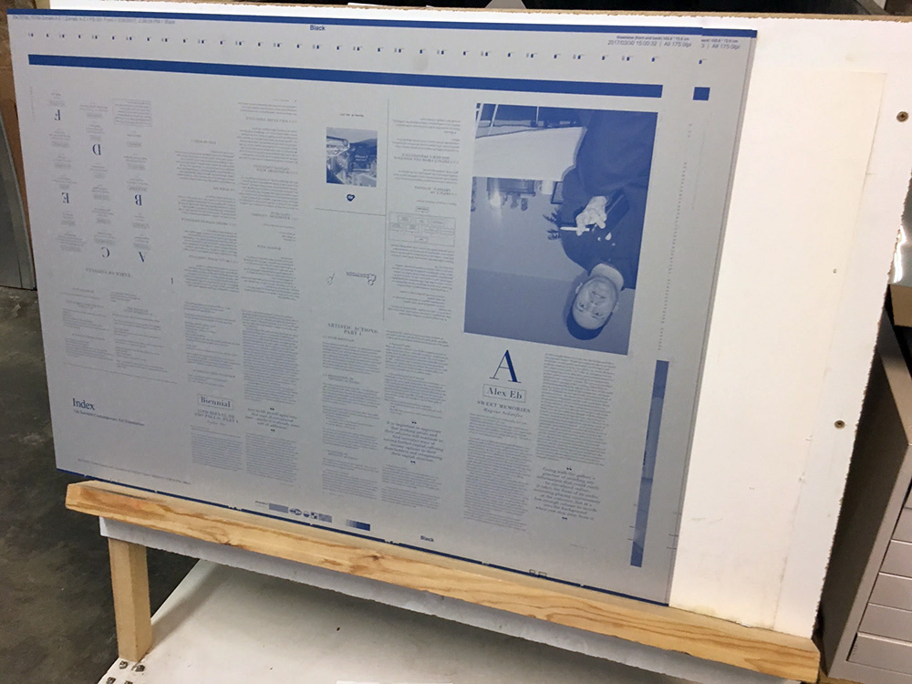

PROVENCE
invited by Handbag (Julija Zaharijević and Julia Znoj)
photos by Philipp Friedrich
Gärtnergasse has resurrected and you’re invited to the opening of the exhibition Criticism Now with a new room-filling installation by PROVENCE. Issue C – Criticism Now will be launched during the opening. This is PROVENCE’s last issue, which herewith closes its eight-issue cycle.
 Friday, April 14, 2017, 18h
OPENING
Show runs from April 14th to April 23rd, open on April 14th from 18h till late, on April 15th from 15h till 18h, and on April 23rd from 16h to 19h (and by appointment).
NEW ADDRESS: Ottakringer Straße 44, 1170 Vienna
Additional program:
Saturday, April 15, 2017
A day with PROVENCE,
the Grinzinger Friedhof Group and S*I*G
12h
Crayon gravestone rubbing – BYOT (Bring Your Own T-shirt, with a light color for better performance) for your unique Grinzinger Friedhof Group Thomas Bernhard T-shirt Edition (2017)
Meeting point: At 12h sharp at the main entrance of Friedhof Grinzing (An der langen Lüssen)
https://goo.gl/maps/J6ar5sbTony
15h
An open-mic reading (without the mic) “A Nice Well-Behaved Fucked-Up Person” by Jill Johnston, 1973
(S*I*G Essay 2, NYC 2017)
Gärtnergasse, Ottakringer Straße 44, 1170 Vienna
Nadja Abt and Tobi Maier, Anonymous, Artists Space, Michele D’Aurizio, John Beeson, Annika Bender, Juliette Blightman and Deanna Havas, Henning Bohl, Mikaël D. Brkić, Oliver Bulas and Noe Derbyshire, Enzo Camacho, Amy Lien and Eve Tangsakul, Merlin Carpenter, castillo/corrales, Anke Dyes and Jutta Zimmermann, Oleg Frolov, Marta Fontalan, Edgars Gluhovs, Grinzinger Friedhof Group, Lina Grumm, Mauricio Guillén, Julia Haller and Inka Meißner, Hilary Harkness and Nolan Simon, Lena Henke and Lisa Holzer, Karl Holmqvist, Daniel Horn, Holger Kuhn, Adriana Lara, Erik Lavesson, Nik Geene and Timothy Furey, Andrea Legiehn, Life Sport, Adam Linder and Jonathan P. Watts, Nicola Di Menna, Julia Moritz, Ariane Müller, Cecilie Norgaard, Philip Pilekjær, Marina Pinsky, Bonny Poon, Zak Prekop, Hinrich Sachs, Sarah Sandelbaum and Hannah Zipfel, Magnus Schaefer, Joël Schranz, Andreas Selg, Natalia Sielewicz, Mathew Sova, Starship, Megan Francis Sullivan, Maja Wismer, Seyoung Yoon, Phillip Zach.